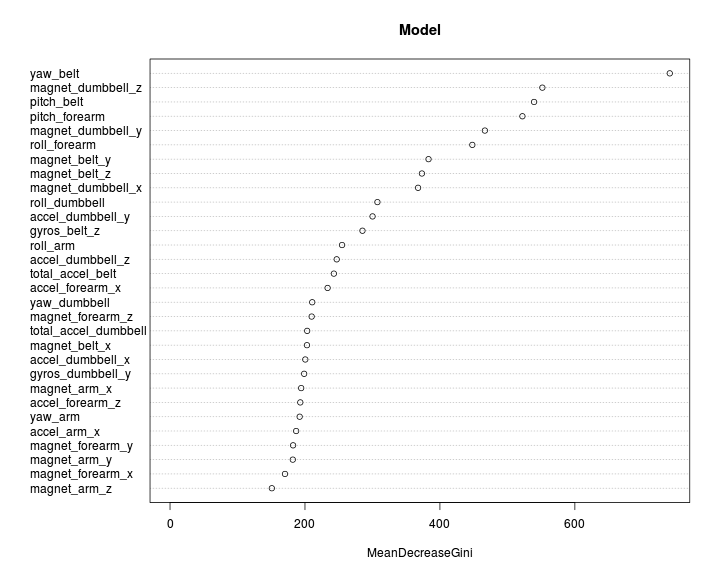
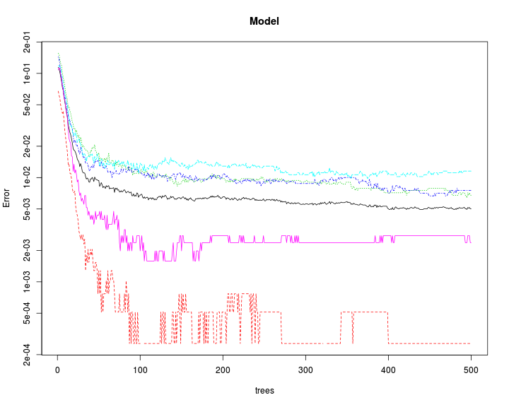

ML Assignment
Load Data
testData <- read.csv("pml-testing.csv", colClasses="character")
trainData <- read.csv("pml-training.csv", colClasses="character")dim(trainData)## [1] 19622 160
dim(testData)## [1] 20 160
Explore data
Explore the input dataset. Dataset contains of 160 columns.
First column is entry id, second is 'user_name' and final 160th one is actual Class of exercise.
More details about the dataset can be found here http://groupware.les.inf.puc-rio.br/har
These three columns have to be extracted as factor. Other columsn 3:159 are numeric values.
trainData[,3:159]<-apply(trainData[,3:159], 2, as.numeric)
trainData[,1]<-as.factor(trainData[,1])
trainData[,2]<-as.factor(trainData[,2])
trainData[,160]<-as.factor(trainData[,160])
testData[,3:159]<-apply(testData[,3:159], 2, as.numeric)
testData[,1]<-as.factor(testData[,1])
testData[,2]<-as.factor(testData[,2])
testData[,160]<-as.factor(testData[,160])First few columns in the dataset tracks entry ID, timestamp, Date etc
These do not help in deciding the activity. Hence, these are removed from the dataset.
names(trainData[,1:7])## [1] "X" "user_name" "raw_timestamp_part_1"
## [4] "raw_timestamp_part_2" "cvtd_timestamp" "new_window"
## [7] "num_window"
trainData <- trainData[,c(-1, -3:-7)]
testData <- testData[,c(-1, -3:-7)]Remove missing data
unique(colSums(!is.na(trainData)))## [1] 19622 396 374 0 397 406 328 326 395 329 401
## [12] 404 402 405 322 321 323
Many of the columns in the dataset have a lot of missing values (NA)
As a safety, we remove all columns which have more than half the data missing.
selCol <- colSums(!is.na(trainData))> (nrow(trainData)/2)
trainData <- trainData[,selCol]
testData <- testData[,selCol]
dim(trainData)## [1] 19622 54
dim(testData)## [1] 20 54
Training and Testing
set.seed(3433)
inTrain = createDataPartition(trainData$classe, p = 0.7, list=FALSE)
training = trainData[inTrain,]
testing = trainData[-inTrain,]After removing the unwanted columns we get a dataset with 54 columnns
Preprocess
Check for low variance factors
It is quite possible that there might be some features which have very low variance
We want to remove these since it will slow down the training process without adding any accuracy.
'nearZeroVar' function checks if the descriptors are close to zero or have very low variance.
nzv <- nearZeroVar(training, saveMetrics= TRUE)
sum(nzv$nzv)## [1] 0
In this case, there were no descriptors with very low variance.
Hence no descriptors are removed from the dataset.
Check for highly correlated factors
# Remove user_name and classe columns
filteredDescr <- training[,2:53]
descrCor <- cor(filteredDescr)
highlyCorDescr <- findCorrelation(descrCor, cutoff = .95)
filteredDescr <- filteredDescr[,-highlyCorDescr]
dim(filteredDescr)## [1] 13737 47
# Add back user_name and classe columns
trainDescr <- cbind(filteredDescr, training[,c(1,54)])
dim(trainDescr)## [1] 13737 49
Two columns were highly correlated and these are removed.
Similarly, the training data is also cleaned up.
filteredDescr <- testing[,2:53]
filteredDescr <- filteredDescr[,-highlyCorDescr]
testDescr <- cbind(filteredDescr, testing[,c(1,54)])
dim(testDescr)## [1] 5885 49
Train RandomForest
# RandomForest
startTime <- Sys.time()
modFit <- randomForest(classe~., data=trainDescr)
endTime <- Sys.time()
endTime-startTime## Time difference of 26.75119 secs
Display model
modFit##
## Call:
## randomForest(formula = classe ~ ., data = trainDescr)
## Type of random forest: classification
## Number of trees: 500
## No. of variables tried at each split: 6
##
## OOB estimate of error rate: 0.5%
## Confusion matrix:
## A B C D E class.error
## A 3905 0 0 0 1 0.0002560164
## B 14 2640 4 0 0 0.0067720090
## C 0 14 2378 4 0 0.0075125209
## D 0 0 25 2226 1 0.0115452931
## E 0 0 2 4 2519 0.0023762376
From the model, we see that Out of Bag error was only 0.5%
If there was no Overfitting, we should get a similar error on testing data
varImpPlot(modFit, main="Model")
plot(modFit, log="y", main="Model")
Apply model on test data
accuracy <- mean(predict(modFit, newdata=testDescr) == testDescr$classe)
testError <- (1-accuracy)*100
testError## [1] 0.7816483
There is only 0.8% error on the test data.
So, there was no overfitting with the model.
Apply model to actual testing data to predict outcome
filteredDescr <- testData[,2:53]
filteredDescr <- filteredDescr[,-highlyCorDescr]
testDescr <- cbind(filteredDescr, testData[,c(1,54)])
dim(testDescr)## [1] 20 49
# Final prediction
outcome <- predict(modFit, newdata=testDescr)
outcome## 1 2 3 4 5 6 7 8 9 10 11 12 13 14 15 16 17 18 19 20
## B A B A A E D B A A B C B A E E A B B B
## Levels: A B C D E